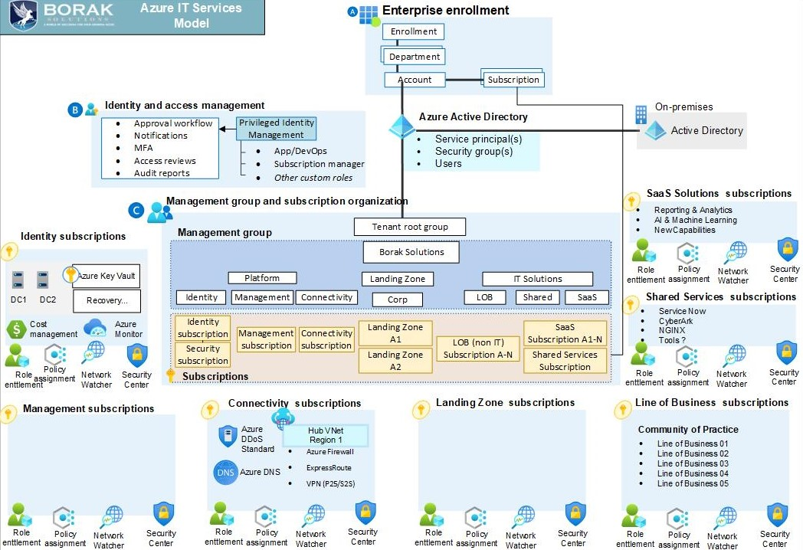

IT and Cloud Models
Cloud computing is a model for delivering on-demand access to computing resources, such as servers, storage, and applications, over the internet. There are three main types of cloud models: public, private, and hybrid. Public cloud services are provided by third-party vendors and can be accessed by anyone with an internet connection. Private cloud services are dedicated to a single organization and can be hosted on-premises or by a third-party vendor. Hybrid cloud services combine public and private cloud services, allowing organizations to benefit from the scalability of public cloud services while maintaining control over their data and applications.
Organizations can choose to build their IT department as an independent consulting firm within a larger organization. This model allows for greater flexibility, scalability, and specialization. The IT department can provide services to other departments within the organization or even external clients, generating revenue and reducing costs. However, this model can also lead to increased complexity and communication challenges with other departments within the organization.

.
Alternatively, organizations can have a traditional IT department, where the department is a part of the larger organization. This model provides greater control and easier communication with other departments, but can be less flexible and scalable.
A hybrid model combines both approaches. The IT department can provide specialized services to other departments within the organization or even external clients, while still being a part of the larger organization. This model can provide the benefits of both the independent consulting firm and traditional IT department models.
IT department as a Consulting Company
Building an IT department as an independent company within a large organization can be a complex process. Here are some general steps to consider:
Define the scope and objectives: Define the scope of the IT department and what services it will provide to the rest of the organization. Determine the objectives of the IT department, such as increasing efficiency, improving productivity, reducing costs, or improving customer service.
Develop a business plan: Develop a comprehensive business plan that outlines the structure of the IT department, its staffing needs, financial projections, and operational strategies. The plan should also include a SWOT analysis and a risk assessment.
Determine the governance structure: Determine the governance structure of the IT department, including its relationship to the rest of the organization. This may include creating a board of directors, an executive committee, or a steering committee.
Hire the right people: Hire a team of skilled professionals with experience in IT management, project management, and technical expertise. You may need to recruit staff from within the organization or hire new talent from outside.
Develop policies and procedures: Develop policies and procedures for the IT department, including security policies, disaster recovery plans, and service level agreements.
Establish vendor relationships: Establish relationships with vendors for hardware, software, and services that the IT department will need to operate. This may include negotiating contracts and setting up service level agreements.
Set up infrastructure: Set up the infrastructure for the IT department, including hardware, software, and network systems. This may include developing a data center, establishing network connections, and deploying software applications.
Develop a communication plan: Develop a communication plan to inform the rest of the organization about the IT department and its services. This may include regular newsletters, training sessions, or other forms of communication.
Monitor and evaluate performance: Monitor and evaluate the performance of the IT department regularly. This may include tracking metrics such as uptime, response times, and user satisfaction.
Building an IT department as a consulting company within an organization have its own pros and cons. Here are some general considerations:
Pros:
Greater flexibility: An independent IT company can be more flexible in responding to the needs of the organization than a traditional IT department, which is often subject to bureaucratic processes.
Focused expertise: An independent IT company can specialize in a specific area of expertise, such as cybersecurity, and provide more comprehensive support than a general IT department.
Clearer cost structure: An independent IT company can provide clearer cost structures and pricing models, which can make it easier for the organization to budget and plan for IT expenditures.
Reduced risk: An independent IT company can mitigate risk by providing specialized services and technologies that may not be available or feasible in a traditional IT department.
Cons:
Cost: An independent IT company may be more expensive than a traditional IT department due to the specialized services and expertise it provides.
Coordination: An independent IT company may require additional coordination and communication with the rest of the organization to ensure that its services and solutions are aligned with the organization's goals.
Integration: An independent IT company may have difficulty integrating its services and solutions with the rest of the organization's systems and processes, which could result in inefficiencies or duplications of effort.
IT as a Legacy Department
Planning as an IT department within an organization involves several steps. Here are some general guidelines:
Understand the organization's goals: Before planning, it's essential to understand the organization's goals and objectives. This understanding will help you align your IT department's plans and activities with the larger organizational goals.
Conduct a needs assessment: Perform a needs assessment to identify the IT requirements of the organization. This includes reviewing current IT systems, identifying gaps, and gathering feedback from stakeholders.
Develop a strategic plan: Develop a strategic plan that outlines the IT department's mission, goals, and objectives. This plan should include a roadmap for achieving these goals and a timeline for implementation.
Establish priorities: Establish priorities for the IT department based on the strategic plan and the organization's goals. This includes identifying which IT projects should be prioritized and which should be deferred.
Create an annual plan: Create an annual plan that includes specific IT projects, activities, and budgets for the upcoming year. This plan should be aligned with the strategic plan and the priorities established.
Develop project plans: Develop project plans for each IT project identified in the annual plan. These plans should include timelines, budgets, resources required, and performance measures.
Assign responsibilities: Assign responsibilities to IT department staff for executing the annual plan and individual projects. This includes identifying project managers and team members, as well as defining roles and responsibilities.
Monitor progress: Monitor progress against the annual plan and individual project plans. This includes tracking performance metrics, identifying risks, and making adjustments as needed.
Review and adjust: Review the strategic plan, annual plan, and project plans regularly to ensure they remain aligned with the organization's goals and objectives. Make adjustments as needed based on changes in the organization's priorities or external factors.
Building an IT as a Legacy Department within an organization have its own pros and cons. Here are some general considerations:
Pros:
Integration: A traditional IT department can be integrated more easily with the rest of the organization's systems and processes, which can lead to greater efficiencies and cost savings.
Cost: A traditional IT department may be less expensive than an independent IT company, especially if the organization has a large and complex IT infrastructure.
Culture: A traditional IT department can be more closely aligned with the culture and values of the organization, which can help to foster a greater sense of teamwork and collaboration.
Cons:
Limited expertise: A traditional IT department may lack specialized expertise in certain areas, such as cybersecurity, which can leave the organization vulnerable to threats.
Limited flexibility: A traditional IT department may be limited in its ability to respond to the needs of the organization due to bureaucratic processes and procedures.
Limited resources: A traditional IT department may have limited resources, including staff, budget, and technology, which can limit its ability to provide comprehensive support to the organization.
Cloud Models
Cloud computing is a technology that enables users to access computing resources, such as servers, storage, and applications, over the internet. There are several cloud models that are available, including:
Public Cloud: Public cloud services are provided by third-party service providers and are accessible to anyone over the internet. Public cloud services are typically based on a pay-as-you-go model, where customers are charged based on their usage of the services. Benefits of public cloud include cost-effectiveness, scalability, and ease of use.
Private Cloud: Private cloud services are hosted on a dedicated infrastructure, either on-premises or in a third-party data center, and are accessible only to authorized users. Private cloud services offer more control over security and compliance, as well as greater customization and flexibility, but may be more expensive to operate.
Hybrid Cloud: Hybrid cloud is a combination of public and private cloud services, where organizations use a mix of on-premises, private cloud, and public cloud resources to meet their specific needs. Hybrid cloud offers the benefits of both public and private cloud, such as cost-effectiveness, scalability, and control over security and compliance.
Community Cloud: Community cloud is a cloud environment that is shared by multiple organizations with common interests or requirements, such as regulatory compliance or industry standards. Community cloud provides the benefits of public cloud, such as cost savings and scalability, while allowing organizations to collaborate and share resources.
Multi-Cloud: Multi-cloud refers to the use of multiple cloud providers to meet an organization's needs. Multi-cloud provides greater flexibility and redundancy, as well as the ability to choose the best cloud provider for each workload.
Conslusion
Cloud computing has become an essential part of modern IT infrastructure. By providing on-demand access to computing resources, cloud models offer organizations the flexibility, scalability, and cost savings necessary to compete in today's fast-paced business environment. Whether an organization chooses a public, private, or hybrid cloud model depends on their specific needs and resources. The right choice can provide significant benefits, such as increased efficiency, faster time-to-market, and improved customer satisfaction.